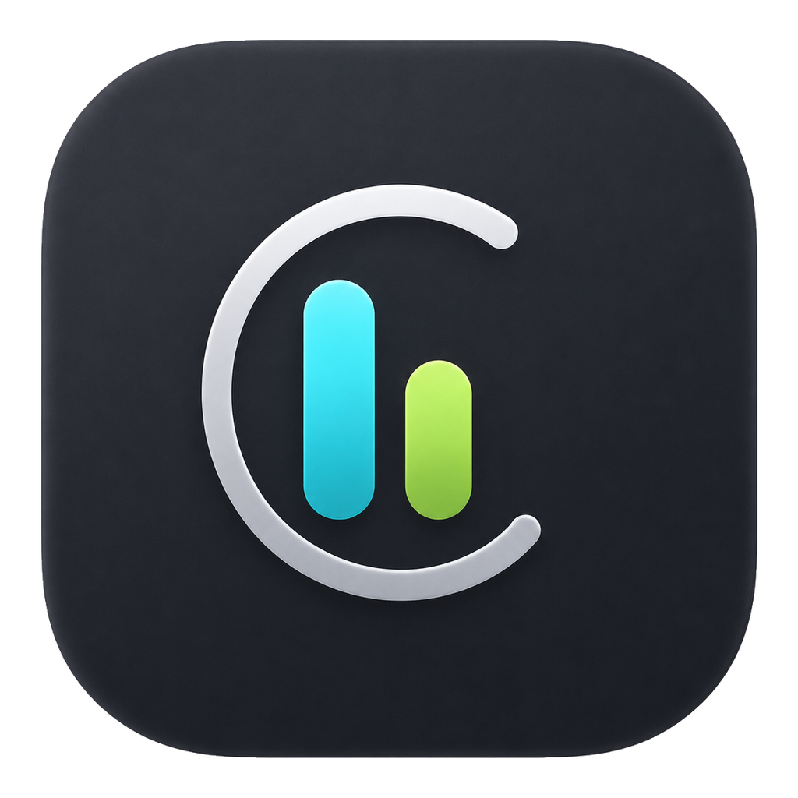
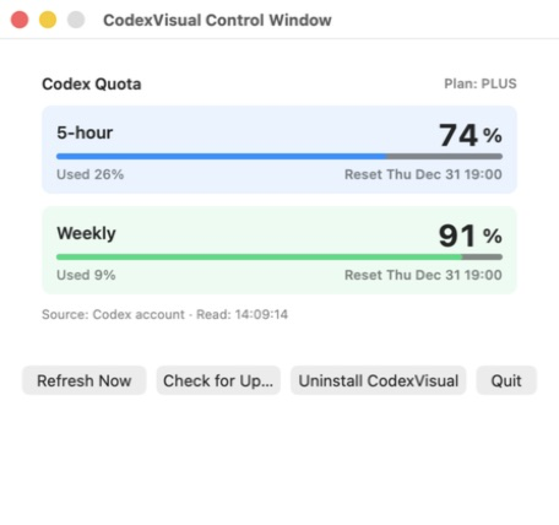

Weekly quota
Shows the primary weekly limit for the account currently signed in to Codex.

CodexVisualOpen-source desktop utility
A focused Codex quota tracker for the macOS menu bar and Windows taskbar tray. See your remaining weekly quota and reset time without opening logs.
macOS 1.0.18 · Windows 1.0.14 · Free and open source
Built for quick decisions
Shows the primary weekly limit for the account currently signed in to Codex.
Displays the remaining time until the quota window resets, down to minutes.
Lives in the macOS menu bar or beside the Windows taskbar, not in a heavy dashboard.
Green, blue, yellow, and red states make remaining quota easy to scan.
Local by design
On macOS, CodexVisual asks the local Codex app service for the currently signed-in account quota, with recent sessions and logs as fallbacks. It does not read auth.json or call an external quota service.

macOS and Windows
中文简介
CodexVisual 是一个开源的 Codex 额度查看工具，支持 macOS 菜单栏和 Windows 任务栏托盘。macOS 版通过本机 Codex 服务读取当前登录账号的每周剩余额度与重置倒计时。
查看中文说明与下载方法